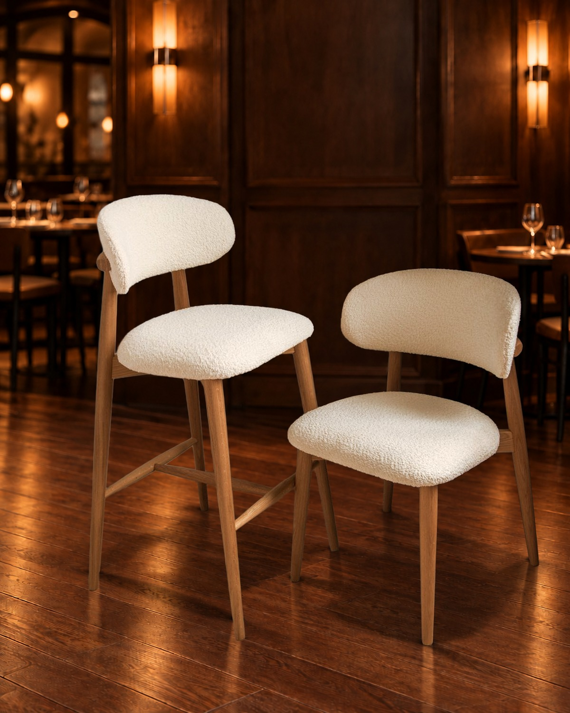
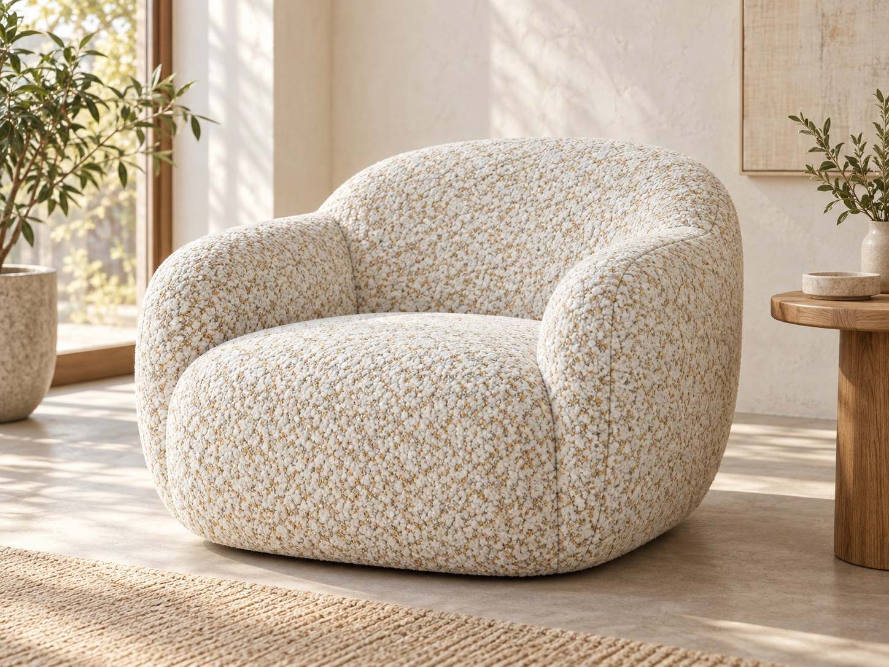
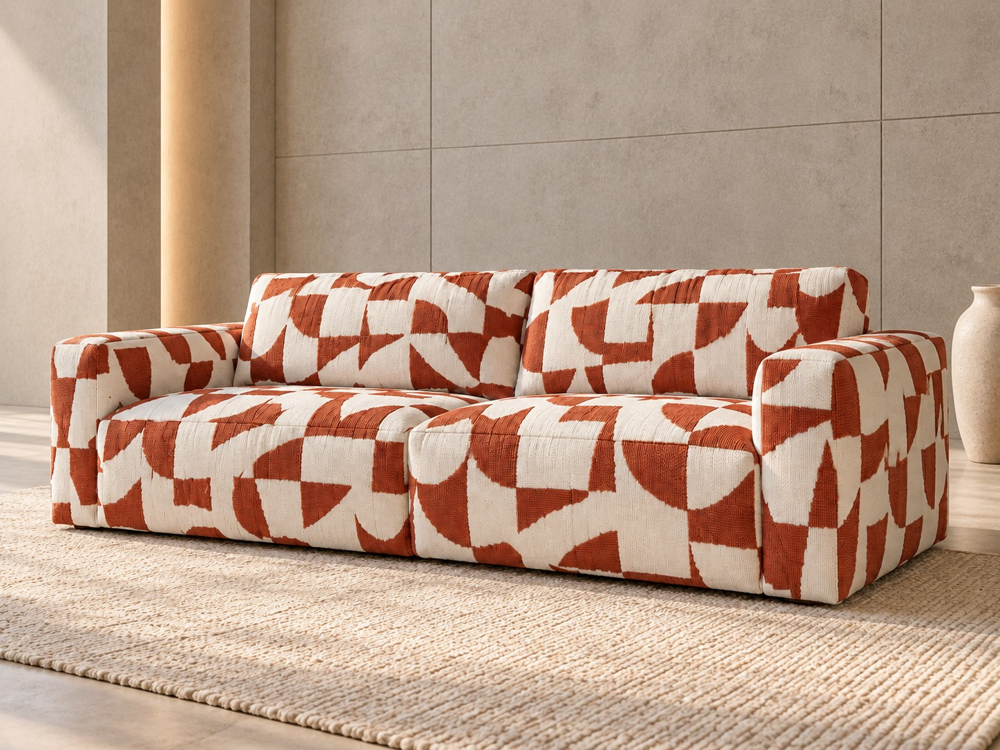
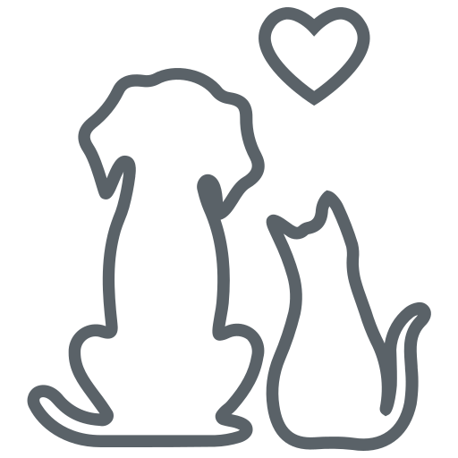
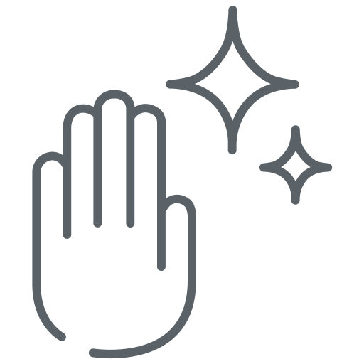

Fabric's · ткани и экокожа для мебели
Мебельные ткани
54 коллекции · 861 оттенок

Fabric's · ткани и экокожа для мебели
54 коллекции · 861 оттенок



Подбор ткани

Дом с кошкой или собакойТкани с антивандальным покрытием12 коллекций
Детская и семьяЛегко отмыть, не вызывает аллергии27 коллекцийОбразцы всех коллекций — у 8 дилеров в разных областях Беларуси. Мебельным фабрикам — поставки рулонами и презентации коллекций.